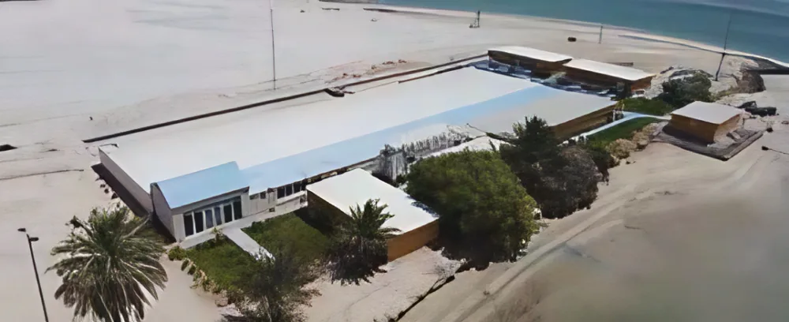

From Vision
to Operation
Gulf Aquaculture began with a simple idea: what if aquaculture were designed for this region, not imported from elsewhere?
This isn't just a job. It's a responsibility to the Gulf.
Validated step by step.
Founded
Formed as a joint venture between Emirates Consortium and Hibiscus Capital Investment — with a simple idea: aquaculture designed for this region.
First sale
First sale of Hamour fry to the local market. Proof of concept through our Balghailam Island hatchery.
Award
Awarded 1st place at the Sheikh Mansour Agriculture Award.
Certified
GA received BAP certification for its two assets.
Scale
Exclusive management of the largest hatchery and nursery facility in the UAE and the wider Gulf, under a 15-year lease — on track to ship 20+ million fry.
To advance sustainable aquaculture by proving it can work in harmony with the Gulf's ecosystems and communities.
Our visionTo nurture a sustainable future by cultivating what thrives naturally, with humility, care, and scientific rigour.
- Grow responsibly, not rapidly
- Invest only what we need to learn
- Focus on animal welfare and ecosystem integrity
- Build trust through transparency
- Share knowledge and invite collaboration
Our role is to serve the sea and the people who depend on it.
We supply seedstock from land-based hatcheries, easing pressure on wild populations.
Lower environmental footprint and energy use, aligned with national sustainability goals.
A Thoughtful
Approach to
Growth
A conversation with Mohamed Razali, General Manager

Q: What inspired you to launch Gulf Aquaculture?
A: I've always believed that food security starts in our own waters. But the models we saw here weren't working — they were imported, high-cost, and environmentally mismatched. We saw a gap for a simpler, region-specific approach. That's how Gulf Aquaculture began.
Q: What makes your approach different?
A: We don't chase complexity. We focus on native species, grow them naturally, and keep our systems lean. The difference is — we're not trying to replicate European aquaculture. We're building something Gulf-born and Gulf-suited.
Q: What's your vision for the next 5 years?
A: Scale. But responsibly. We want to prove this model can work nationally, and then regionally. And we want to be a partner to government and research institutions — not just a supplier, but a strategic contributor to the UAE's food systems.
“Every phase is tested
before it’s scaled. That’s
how we build trust —
with nature and with investors.”

“We’re not building a fish farm. We’re building trust — in the idea that the UAE can feed itself, responsibly.”Mohamed Razali
Q: What does success look like for Gulf Aquaculture?
A: For us, success isn't measured by how fast we grow, but by how well we grow. If we can reliably produce fry of local species to support the region's aquaculture industry, raise healthy fish, protect the marine environment, and earn the trust of partners and regulators — that's a strong foundation. Over time, we hope our model can inspire others to approach aquaculture in a more local and sustainable way.
Q: How do you approach uncertainty in a developing sector like this?
A: Carefully. We know this industry is still taking shape in the region, so staying grounded is key. We start small, validate every step, and let production data and environmental conditions guide our decisions. It's about being proactive without being reckless — and keeping long-term resilience at the center of what we do.